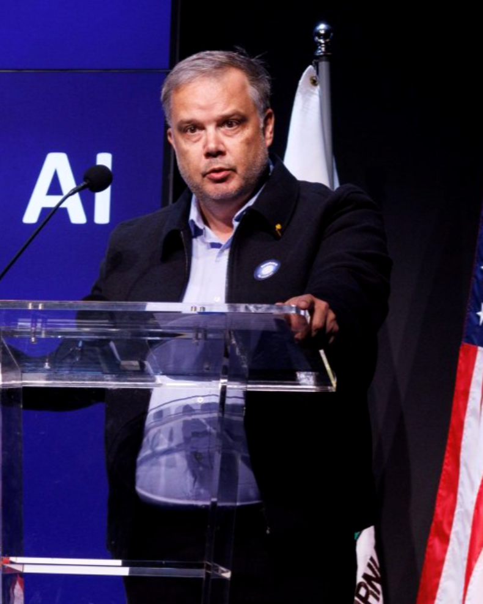

NASA · SETI · FDL.AI · U.S. DOE
{{ t.eyebrow }}
{{ t.heroPre }}{{ t.heroEm }}{{ t.heroPost }}
{{ t.heroSub }}
{{ t.findMe }}
{{ s.name }}

Gregory Renard
SF · Paris · Bruxelles
{{ t.introKicker }}
{{ t.introHeading }}
WALLONIA · BELGIUM · 2025
{{ t.academiaKicker }}
{{ t.academiaTitle }}
{{ t.recognitionTitle }}
{{ t.sectorsKicker }}
{{ t.sectorsTitle }}
{{ t.sectorsLead }}
{{ sec.tag }}
{{ sec.name }}
{{ sec.d }}
{{ t.servicesSub }}
{{ t.servicesTitle }}
{{ t.quoteKicker }}
“Good news: AI isn't going to replace you. Bad news: a person who uses AI will. One thing is certain — talent will matter even more.”
{{ t.contactLoc }}
{{ t.contactTitle }}
{{ t.contactSub }}
{{ t.contactCta }} →